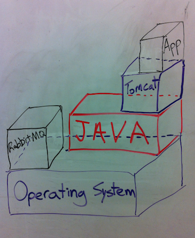
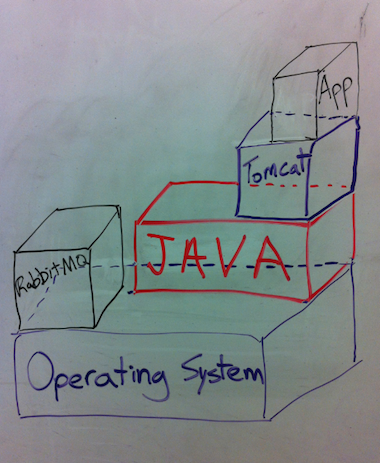
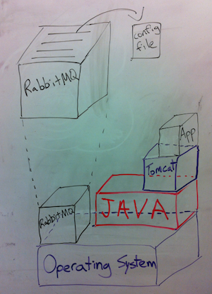
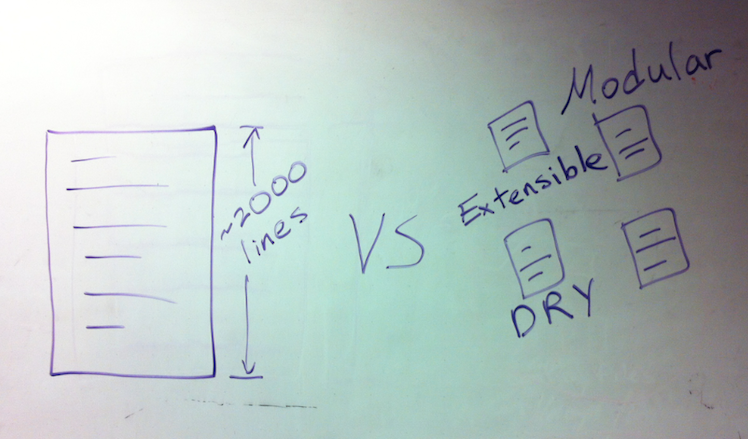
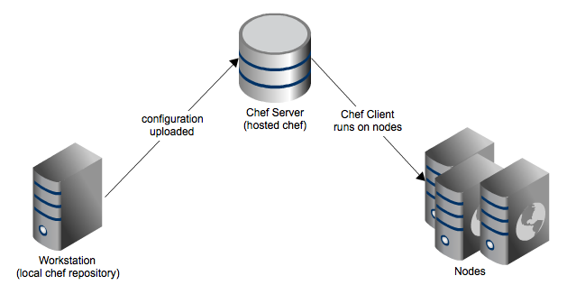
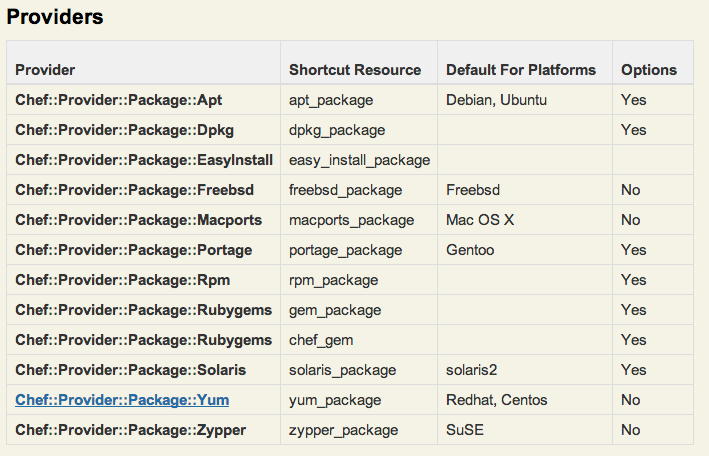
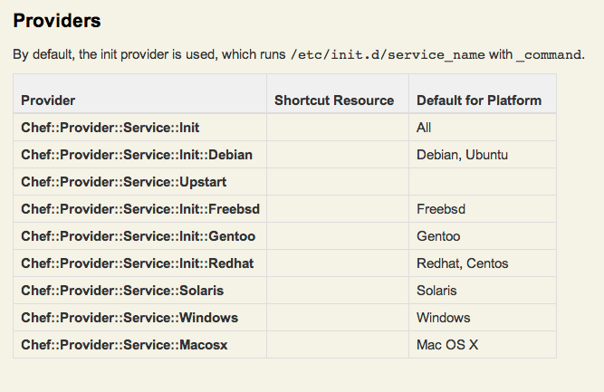
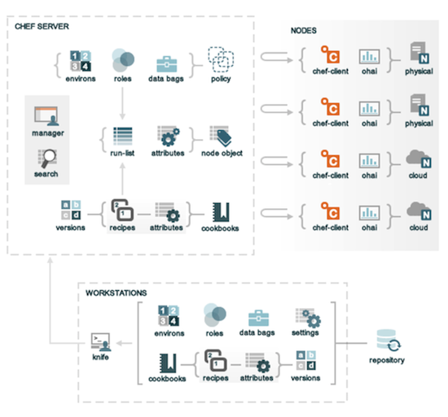
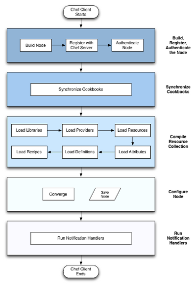

We need to build all this for the app to run.

We need to build all this for the app to run.

http://en.wikipedia.org/wiki/Software_configuration_management Repeatable deployments Consistent deployment across multiple platforms Avoid snowflake servers Infrastructure as code Software Configuration Management concerns itself with answering the question "Somebody did something, how can one reproduce it?"

- With Chef, you write abstract definitions as source code to describe how you want each part of your infrastructure to be built, and then apply those descriptions to individual servers.


Chef-client is the actual thing that executes the cookbooks
Add picture to show chef-server and chef-client combined with things being thrown out to become chef-solo To provide the raw execution of cookbook recipes, the complete cookbook needs to be present on the disk.
make this stuff fly in
make this stuff fly in
sequential collection of resources utilizes attributes
apache2/recipes/default.rb
package "apache2"
template "/etc/apache2/apache2.conf" do
user "www-data"
group "www-data"
mode node["apache2"]["mode"]
source "apache2.conf.erb"
end
service "apache2" do
action :enable
end
make this stuff fly in TODO: include Ohai slide
Parameters to recipies node specific data
apache2/attributes/default.rb
default["apache2"]["user"] = "www-data" default["apache2"]["group"] = "www-data" default["apache2"]["mode"] = "0644"
apache2/recipes/default.rb
package "apache2"
template "/etc/apache2/apache2.conf" do
user "www-data"
group "www-data"
mode node["apache2"]["mode"]
source "apache2.conf.erb"
end
service "apache2" do
action :enable
end
zypper, yum, apt, pkg-add, ips service is running debian upstart vs chkconfig vs redhat service
apache2/recipes/default.rb
package "apache2"
template "/etc/apache2/apache2.conf" do
user "www-data"
group "www-data"
mode node["apache2"]["mode"]
source "apache2.conf.erb"
end
service "apache2" do
action :enable
end
zypper, yum, apt, pkg-add, ips service is running debian upstart vs chkconfig vs redhat service

service is running debian upstart vs chkconfig vs redhat service
apache2/recipes/default.rb
package "apache2"
template "/etc/apache2/apache2.conf" do
user "www-data"
group "www-data"
mode node["apache2"]["mode"]
source "apache2.conf.erb"
end
service "apache2" do
action :enable
end
zypper, yum, apt, pkg-add, ips service is running debian upstart vs chkconfig vs redhat service

cookbook can have an LWRP with no recipes. LWRPs require less ruby knowledge as they are built using chef's DSL
cookbooks/opscode/resources/database.rb
actions :create, :delete attribute :name, :kind_of => String, :name_attribute => true attribute :type, :kind_of => String
cookbooks/opscode/providers/mysql.rb
action :create do
execute "create database" do
not_if "mysql -e 'show databases;' | grep #{new_resource.name}"
command "mysqladmin create #{new_resource.name}"
end
end
action :delete do
execute "delete database" do
only_if "mysql -e 'show databases;' | grep #{new_resource.name}"
command "mysqladmin drop #{new_resource.name}"
end
end
cookbooks/monkeynews-app/recipes/default.rb
opscode_database "monkeynews" do type "innodb" action :create provider "opscode_mysql" end
note the apache2.conf.erb
apache2/templates/default/apache2.conf.erb
ServerRoot <%= node['apache']['dir'] %> PidFile <%= node['apache']['pid_file'] %> Timeout <%= node['apache']['timeout'] %> Include <%= node['apache']['dir'] %>/conf.d/ Include <%= node['apache']['dir'] %>/sites-enabled/
apache2/recipes/default.rb
package "apache2"
template "/etc/apache2/apache2.conf" do
user "www-data"
group "www-data"
mode node["apache2"]["mode"]
source "apache2.conf.erb"
end
service "apache2" do
action :enable
end
Version
apache2/metadata.rb
name "apache2"
maintainer "Opscode, Inc."
maintainer_email "cookbooks@opscode.com"
license "Apache 2.0"
description "Installs and configures all aspects of apache2 using Debian style
symlinks with helper definitions"
long_description IO.read(File.join(File.dirname(__FILE__), 'README.md'))
version "1.6.0"
recipe "apache2", "Main Apache configuration"
%w{redhat centos scientific fedora debian ubuntu arch freebsd amazon}.each do |os|
supports os
end
nagios/metadata.rb
name "nagios"
maintainer "Opscode, Inc."
maintainer_email "cookbooks@opscode.com"
license "Apache 2.0"
description "Installs and configures Nagios server and the NRPE client"
long_description IO.read(File.join(File.dirname(__FILE__), 'README.md'))
version "4.0.0"
%w{ apache2 build-essential php nginx nginx_simplecgi }.each do |cb|
depends cb
end
...
- Often, you need to distribute files to your servers. The Files within a cookbook are where you can do just that.
mongodb/file/default/replicaset.json
{ "mongodb":
{ members: [
"member1": "host1.corp.com:27017",
"member2": "host2.corp.com:27017",
"member3": "host3.corp.com:27017"]
}
}
mongodb/recipes/replicaset.rb
... cookbook_file "/tmp/replicaset.json" do source "replicaset.json" end ...
Libraries allow you to include arbitrary Ruby code, either to extend Chef's language or to implement your own classes directly.
mongodb/libraries/mongodb.rb
class Chef::Recipe::MongoDB
def self.initialize_replicaset(replicaset_name, mongo_nodes, credentials)
require 'rubygems'
require 'mongo'
...
mongo_nodes.each do |mongo_node|
bson_member = BSON::OrderedHash.new
bson_member['_id'] = new_member_id
new_member_id += 1
bson_member['host'] = "#{mongo_node['fqdn']}:#{mongo_node['mongodb']['port']}"
members << bson_member
end
config['members'] = members
...
end
end
mongodb/recipes/replicaset.rb
...
ruby_block "Initialize Replicaset" do
block do
Chef::Recipe::MongoDB.initialize_replicaset(...)
end
end
...

